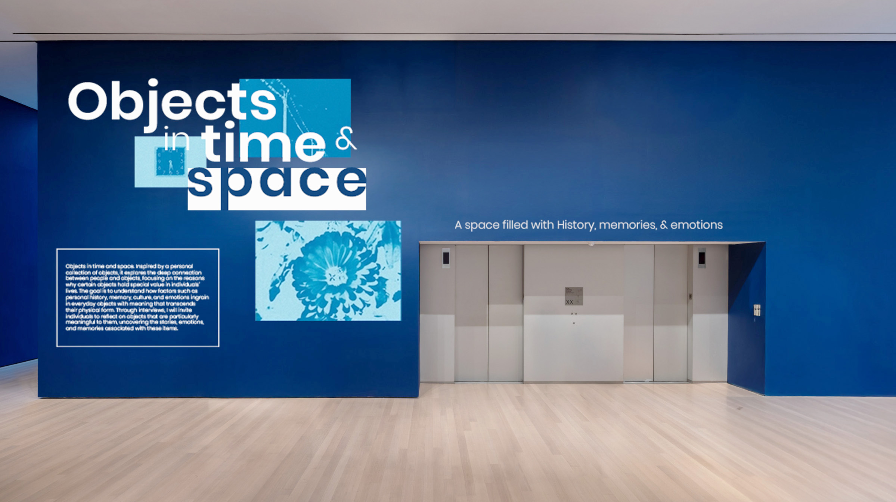
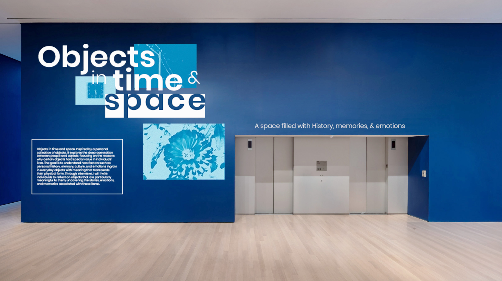

[About]
Objects in time and space. Inspired by a personal collection of objects, it explores the deep
connection between people and objects, focusing on the reasons why certain objects hold
special value in individuals’ lives. Through interviews, I will invite selected individuals to reflect on objects that are
particularly meaningful to them, uncovering the stories, emotions, and memories associated with these items. These narratives are then interpreted and transformed into a video installation.


 
